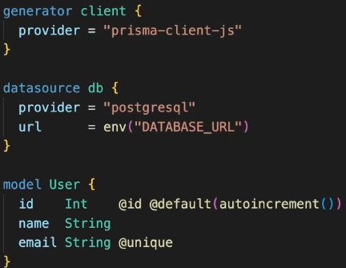

Node JS
Aqui iremos começar a jornada do BACKEND. Indo mais direto ao ponto, de acordo com a arquitetura da programação moderna, na maioria das vezes você irá se deparar com a criação de APIS. Apis é um ponto de conexão entre o front e o banco de dados. A API é o BACKEND da sua aplicação. Por exemplo, quando voce se cadastra em um site (FrontEnd), e envia a requisição para criar nova conta, essa requisição não vai direto para o banco de dados, ela passa por um "porteiro", que irá validar os dados, confirmar com o banco se os dados já não existem , etc. Esse porteiro é a nossa API, que é o BackEnd. Dito tudo isso, praticamente sempre no mundo real o backend irá se comunicar com um banco de dados, então podemos dar início aos estudos de BackEnd através dos Banco de Dados.
MySQL
Dentro do banco de dados temos basicamente duas coisas que precisamos mexer. O Servidor( Software que é o próprio banco de dados), e o Cliente, que é o software que utiliza o servidor, ou seja, usa o bacno de dados. Por exemplo, ao desenvolvermos uma API que consome um Banco, a API é o cliente e o Banco é o servidor. Primeiramente iremos aprender sobre banco de dados Relacionais - SQL. De início começaremos com o MySQL ou o Postgree. Ambos são open source, ambos funcimam em todos os sistemas operacionais, e ambos também suportam qualquer linguagem de programação. Porém possuem algumas diferenças como o mysql NÃO ser casesenstive, já o postgree é casesensitive. Porém e quando falamos de performance? Quando falamos em querys complexas ou grandes volumes, o postgree tende a ser um pouco mais rápido, já quando falamos para pequenos volumes ou consultas simples, o mysql tende a ser mais rápido do que o postgrees. Aqui quando estamos falando de mais rápido ou mais devagar, estamos falando de diferenças de milisegundos. Dito isto, quando esta iniciando, tanto faz a escolha, sem contar que sabendo utilizar um, o outro é praticamente tão fácil quanto.
O primeiro passo para começarmos a colocar a mão na massa é instalarmos o banco de dados que deseja escolher, e em seguida instalhar um cliente sql que é basicamente um software que nos permite interagir com o banco de dados em questão, executar querys, comando, etc. Particularmente eu costumo utilizar o MySQLWorkBench, que dependendo da configuração do dispositivo do usuário pode não ser a melhor escolha por acabar sendo um pouco 'pesado', porém temos opções como Dbeaver, etc.
ORMS
Agora que já entendemos o que são os banco de dados, seus tipos e seus clientes, precisamos entender outro fator fundamental para a integração deles com nossa aplicação(NodeJS), que são as ORMS. Existem várias formas de conectarmos os bancos de dados com nossos códigos, e uma dessas formas é o bom e velho ORM. ORM -> Object Relational Mapper, que traduzindo seria o mapeamento de um objeto-relacional. Basicamente instalamos bibliotecas em nosso sistema e criamos entre aspas uma cópia do banco de dados dentro do nosso código. Por exemplo, "O banco se chamará tal, teremos tais tabelas, cada tabela armazena tais atributos, seus tipos etc'. Mas, se já temos isso dito no banco, para que precisamos repetir no código ? Precisamos repetir no código para que ele entenda exatamente todo o comportamento do banco, desas forma, podemos dentro do código adicionar um usuário por exemplo ao banco de forma extremamente simples como : users.add(user), ao invés de termos que digitar querys longas, etc. Agora que já entendemos o que são as ORM's, estudaremos duas: Prima & Sequelize.
Prisma
Prisma foi feito exatamente para funcionar com o Node + Typescript. Basicamente no código criamos tudo em um só lugar. No código criamos como o banco irá ficar, que irá gerar um type, que irá criar a estrutura no banco de dados, tudo alinhado e padronizado.
O primeiro passo é criarmos nosso projeto e instalarmos a biblioteca do prisma. Para criarmos nosso projeto, poderemos utilizar um repositório que nos fornece uma pré configuração de um servidor. NODE-API-BASE. Após criado a base, precisamos instalar o Prisma em nosso projeto, com o comando: npm i -D prisma , que já vem por padrão com suporte a TypeScript. Uma das caracteristicas do Prisma é que ele trabalha com o conceito de CLI (linha de comandos no terminal). O primeiro comando que precisamos entender é o seguinte:
INICIAR O PRISMA: NPX PRISMA INIT
Após Criado, ele irá criar seu próprio .ENV, porém como já possuímos o nosso, basta copiar o que está la dentro, e colocar para dentro do nosso próprio env.local. Uma vez que o prisma estiver iniciado, ele já fará toda a configuração inicial, e a primeira que precisamos nos atentar, é a variavel de ambiente que copiamos. Por padrão ele vem configurado para trabalhar com POSTGREE, porém caso queiramos trocar para mysql, basta alterar ali. Ali também encontramos informacoes chave como o usuário, senha, porta e nome do banco. A única coisa que o prisma não faz é criar o próprio banco em si, isso precisaremos fazer na mão, mas o resto todo ele irá fazer por conta própria.
Podemos reparar que ao instalarmos o prisma, uma pasta PRISMA foi criada, logo, o próximo passo é entendermos o que há dentro dela. Ali iremos ver que temos um schema.prisma local onde iremos realizar grande parte de nossas configurações. Vale ressaltar que tabelas no Prisma são chamadas de Model. Ali dentro teremos o generator client & datasource DB. Abaixo deles, começaremos a construir o nosso Banco.
O prisma possui um recurso extremamente bacana que é o PUS & PULL. Funciona mais ou menos igual no git, quando damos um git push, pegamos o código e enviamos para o repositório remoto. Quando damos um git pull, pegamos o repositório remoto e juntamos com o código. No caso do prisma ele tem o mesmo princípio. Através do push e irá enviar para o banco tudo o que configuramos em seu arquivo acima. E caso tenhamos um banco criado e queiramos pegar o banco de dados e com base nele criar um schema, podemos usar o pull . Comandos:
ENVIAR P/ BANCO: NPX PRISMA DB PUSH
PUXAR DO BANCO: NPX PRISMA DB PULL
Migrations
Esse conceito não é exclusivo do Prisma, e sim da programação em geral. São basicamente um histórico de modificação na estrutura do banco de dados. Funciona basicamente igual um Commit, criando um histórico do banco de dados. Mas para que precisamos disso ? Primeramente sempre saberemos a evolucao do banco, e também para conseguir reverter modificações. Por ex: Adicionamos um novo campo na tabela usuário, um novo campo na tabela tarefas. Caso algo de errado nessas novas features, poderemos facilmente reverter e voltar pro estado anterior. Veremos o comando das migrations: Quando criamos migraitons, automaticamente ele da o Push.
CRIANDO MIGRATIONS: NPX PRISMA MIGRATE DEV
Relações/FK
Comumente dentro de nossas aplicações iremos trabalhar com entidades que possuem relações com outras entidades. Por exemplo, uma tabela de Usuários e uma tabela de Posts. Existe uma ligação entre elas, afinal, um usuário pode ter um ou muitos Posts. Para isso, basta por exemplo colocarmos dentro da tabela post, o campo UserID. Pronto, dessa forma eles passarão a ser interligados, e podemos gerenciar tudo pelo próprio código. Porém, imagine a situação em que um usuário resolve excluir sua conta. Se essa relação for feita apenas via código, iremos ter no banco de dados diversos registros de Posts de um usuário inexistente por exemplo. Por isso, é importante fazermos o relacionamento também no banco. E o Prisma nos possibilita isso, como no exemplo abaixo:
Propriedades e ENUMS:
Aqui iremos dar uma visualizada nos tipos de dados e opções que temos para trabalhar dentro do Prisma.

Usando o MAPPING:
Mapping nao tem nenhuma aplicação prática em termos de recursos no código. Porém ele é importante no sentido de organização no código. É mais utilizado quando temos nomes diferentes entre o schema e a tabela em si do banco. Ou então quando temos por exemplo no schemna "subtitle" e no banco precisamos salvar "sub_title". Dessa forma através do mapping conseguimos realizar essas trocas. Exemplo abaixo:

Prisma Studio
É uma ferramenta do próprio prisma que funciona basicamente como um dbiever ou workbench, e nos apresentar através de um sistema próprio, da nossa própria estrutura do schema.prisma. Para isso precisamos digitar o comando:
ABRIR PRISMA STUDIO: NPX PRISMA STUDIO
Prisma Client
Como vimos anteriormente, ao darmos um prima init ele automaticamente cria um arquivo, que possui dois objetos, o de configuracao do banco, e o prisma client. E aqui iremos aprender sobre o prisma cliente, qeu será fortemente utilizado a patir de então. A partir daqui aprenderemos a utilizar o prisma no mundo real. Para isso, precisamos começar entendendo o que ele faz e como ele funciona. O prisma client nada mais é do que uma biblioteca que é criada/gerada no ato. Ela é criada conforme nosso código de configuração do Prisma. Após criarmos nossos schemas, com base nisso o prisma irá gerar para gente basicamente duas coisas distintas: Os types do Typescript exatamente igual nossos schemas. E o outro recurso, é o das relações por debaixo dos panos. Como por exemplo quando falamos user e posts, através do prisma client, podemos puxar por ex um post e as informacoes do usuário tudo de uma única vez.
Dito isto, como o prisma client é gerado baseado em nosso código, sempre que alterarmos o código precisamos automáticamente gerar outro prisma client. Porém, em muitos comandos que utilizamos como por exemplo as migrations ele já atualiza o PC automáticamente.
Dito isto, a partir daqui podemos definitivamente integrar o prisma ao projeto. É importante e ideal é que separemos o prisma client da aplicação. Para isso podemos criar uma pasta chamada Libs e dentro um arquivo chamado prisma.ts . Dentro desse prisma.ts , instanciaremos o prisma client, e em seguida iremos exportar essa instância, instancia essa na qual pode ser chamada de prisma ou de DB. A partir dessa instancia em qualquer lugar dentro da nossa aplicação podemos acessar o banco, através dessa instancia. Um problema muito comum de usuários de prisma é um error no banco de dados, informando que existem multiplas conexões no banco de dados, etc. Ao lermos a documentação ela explica o motivo e também a solução. É muito comum que em nossos projetos utilizemos o watch, nodemmon, etc, que nada mais é do que um recurso de monitoramento de qualquer mudança realizada na aplicação. Dessa forma, sempre que alteramos e voltamos, ele irá recarregar o código todo, logo, irá gerar uma nova instancia do prisma client, e assim uma nova conexão. Este é o Motivo do Erro, e lendo a documentação ela nos diz que precisamos copiar um trecho de código e colar em nosso prisma client. Dessa forma essa "duplicação" não irá mais acontecer. Link da documentação Clicando Aqui

Watch & Imsonia
Antes de fato de colocarmos a mão no ORM dentro do projeto, precisamos habilitar o Watch. para isso, utilizamos o comando:
Habilitar o Watch: npm i -D tsx
Agora que ja temos a dependencia watch instalada, precisamos ir dentro do arquivo package.json e alterar o "script", como o da imagem, a partir daqui, qualquer alteração que realizarmos dentro do nosso código, será monitorado e o servidor rodará novamente.
CRUD - CREATE
Aqui iremos aprender a inserir um nobo registro na tabela. Da forma mais simples que temos, adicionamos um novo registro assim:
OBS: Temos sempre que lembrar que a comunicação entre a API e o BANCO é uma comunicação assíncrona e do meio externo, logo, caso aconteça algum error nesse percurso, precisamos trata-los e informar aos demais. Quando falamos em tratar error, uma das primeiros coisas que lembramos é do try/catch. Abaixo um exemplo do error sendo tratado no trycatch:
Usando os Types do Prisma
O prisma já nos permite utilizar um type pré criados para isso. Por exemplo, podemos tipar as props de um método no service utilizando um Type fornecido pelo próprio prisma, fazendo com que a confiabilidade fique exatamente igual e de acordo com o que possuímos dentro do nosso banco de dados. Exemplo:

Outro fator muito interessante no Prisma, é que ele nos permite criar muitos usuários de uma úica vez. Por exemplo, podemos receber por parâmetro um Array de usuários, e em seguida com apenas um comando, adicionar todos os usuários de uma única vez ao banco de dados, e ainda podemos colocar um comando que nos permite pular o duplicado.

API
Quando comecamos a estudar backend aqui no capitulo de NodeJS nós já demos uma pincelada sobre o que é uma API, que funciona como um intermediador entre uma aplicacao front e um banco de dados. Quando trabalhamos com WEB, usaremos constantemente os termos REST e RestFull.Rest, significa Transferencia de estado representacional, basicamente ele é um padrão. Uma api feita no padrão REST é a mesma coisa que falar: esse texto está escrito em portugues. Restfull é um sistema que utiliza um padrão Rest. Logo, se voce desenvolver uma API usando o padrão REST, ela será uma API Restfull. O padrão REST possui alguns pilares que iremos ver nesse capítulo, como os EndPoints, Métodos(GET,POST,PUT,DEL), entre outros que iremos ver com o tempo.
Podemos começar então Criando o Projeto que pode ser criado do zero como veremos nesse módulo, ou então clonando do github nesse link já pré configurado: NODE-API-BASE que irá facilitar o processo inicial, porém é importante saber como começar do zero.
Para começar do zero, precisamos gerar os seguintes comandos: npm init para startar o projeto. Em seguida, instalar as dependencias com o comando: npm install dotenv express pg pghstore sequelize validator . Para iniciar o typescript, precisamos roadr o comando: tsc --init, e em seguida realizar algumas alterações basicas como colocar para o ecmascript 6, setar a root e a outDir como na imagem abaixo, descomentar o moduleresolution: node, e em seguida criar a pasta SRC, onde ficará concentrado todo o "core" da nossa aplicação.

Para finalizar, precisamos instalar os Types da nossa aplicação, com o comando: npm install --save-dev @types/express @types/node @types/validator . Tendo tudo isso configurado, podemos criar e começar a trabalhar com nosso servidor, (dentro da pasta src).
Para finalizar a criação inicial do nosso backend, precisamos apenas criar dentro do packageJson, no objeto Scripts, o comando para startar o projeto: "start-dev": "nodemon -e ts,json src/server.ts", e agora para startarmos basta irmos até o console e colocar: npm run start-dev.
Agora que temos o "core" da nosas API criada, iremos começar a trabalhar de forma basica nela, e com o tempo separando, colocando casa coisa em seu devido "lugar". Podemos começar criando as nossas Rotas. Como já devemos imaginar, onde colocaremos nossas rotas? Exatamente, dentro de uma pasta chamada Rouets. Entao criamos essa pasta, e dentro dela podemos criar um arquivo chamado: Api.TS, onde iremos configurar nossas rotas e seus devidos Endpoints. Tendo o arquivo criado, já podemos começar a construir nossos Endpoints. De início, iremos criar o Ping/Pong que é o básico para testarmos se uma API está funcionando. Logo em seguida, precisamos colocar esse arquivo Api.ts dentro do "core" da nossa aplicação para que ele passe a ser visto.
Routes:

Implemento Routes no Core:
Muitas vezes parametros serão enviados através do Endpoint, para que possamos pegar dentro das rotas (futuramente dos controllers), para isso, podemos criar rotas dinamicas, da seguinte forma:
Entendendo CORS:
Quando estudamos requisições REACT no módulo de frontEnd, vimos sobre CORS, e aqui veremos mais afundo. Quando estamos criando uma API, por padrão ela só irá aceitar requisições do mesmo domínio. Logo, através das configurações do CORS podemos configurar exatamente quais domínios podem acessar nossa API, e ainda podemos ser mais específicos, podemos configurar quais métodos podem ser utilizados em cada endpoint da sua api por exemplo. Para resolver esse problema, podemos instalar uma biblioteca chamda CORS. Para isso, utilizamos o comando: npm install Cors. e também seus types: npm install -D @types/cors. Em seguida, dentro do nosso servidor, podemos importar o cors, e configugrar exatamente como gostariamos de configurar o CORS.
Controllers
A partir daqui passaremos a trabalhar com Controllers,entre outras páginas para que possamos separar melhor cada informação. Criamos um Controller para cada entidade da sua aplicação, e ele será o responsável por todos os métodos existentes e responsáveis por ela. Por exemplo, criaremos dentro do controller funcoes para adicionar, remover, etc. E lá nas rotas, ao invés de colocarmos a função diretamente, iremos colocar a função do Controller a ser executada.
Requisições POST:
Quando recebemos requisições post, as informacoes estão no Body (req.body)
Status Code
Quando estamos desenvolvendo API'S padrão REST, outra coisa de fundamental importancia são os status das nossas Responses. Através desses status que os futuros consumidores de nossas API'S irão saber como lidar com os diversos tipos de respostas possíveis. Os statusCode funcionam como " números que indicam o que houve ", como por exemplo : 200 - OK, 201 - OK Adicionado, 400 - Error. etc. Você não precisa decorar exatamente cada variação, apenas a sua faixa, ex: do 0 ao 99 é isso, do 99 ao 199 aquilo, e por ai vai.
Autenticacao vs Autorizacao
Constantemente ao desenvolvermos aplicações iremos nos deparar com a necessidade de realizar logins, criar contas, etc. Para que isso ocorra, precisamos ter claro na mente a diferenca de Autorizacao e Autenticacao. Autorizacao, é simplesmente quando uma pessoa PODE ou NÃO pode realizar determinada tarefa. Ela não está ligada a QUEM, e sim a se pode ou não. Já a AUTENTICAÇÃO, é o processo de saber quem é o usuário que está tentando realizar tal tarefa. Na autorizacao é quando descobrimos quem é voce, e na autorizacao é se voce pode ou não realizar determinada tarefa. Agora que já entendemos a diferença entre elas, iremos nos aprofundar previamente sobre os Tipos de Autenticações que podemos vir a trabalhar. Single-Factor Auth É basicamente a de um fator, uma única etapa, ou seja, colocamos usuário e senha por exemplo, e baseado nisso o sistema lhe dá ou não o acesso. Outro tipo que vem ganhando cada vez mais espaço é a Two-Factor Authentication que é a autenticação em dois fatores, que também é conhecido como 2FA, que basicamente precisamos acertar o usuário e senha, e em seguida precisamos realizar uma segunda etapa, para confirmarmos ainda mais que somos nós mesmos. Também existe o Multi-Factor Authentication (MFA) , é uma autenticacão em múltiplos fatores, onde o usuário para logar precisa enfrentar várias etapas. Outro bastante utilizado nos dias atuais e o Single Sign-On (SSO), que seria uma "Autenticação única universal". Muito comum com sua conta do gmail por exemplo, que ao voce logar, voce automaticamente irá logar no youtube também. Ou na Meta, quando voce loga no FB, já efetua o login no Instagram também. Essas são básicamente as formas que temos de autenticar.
Agora mergulheremos um pouco mais nos termos técnicos, pois independente de qual tipo de autenticação utilizar, temos um próximo passo, que é a forma de como iremos liberar o acesso após o usuario ser autenticado. E para isso existem também algumas formas que veremos aqui. Basic Auth É uma forma de em todas as requisições que tivermos dentro da aplicação iremos enviar junto o seu usuário e senha, para que possamos veririficar. Isso acontece utilizando um Hash chamado e BASE64. Apesar de já ter sido uma das formas mais utilizadas, nos dias atuais praticamente não é mais. Atualmente utilizamos as chamadas OAUTH (1 & 2). O OAuth 1, basicamente utilizamos um terceiro para gerar um token. Um exemplo real, é quando acessamos uma aplicação qualquer, que nos permite realizar o login com o facebook por exemplo. Logo, logamos pelo facebook, e ele nos retorna um token, dizendo: quem está logando é realmente o usuário tal. E dessa forma utilizamos nossa aplicação. O que é um token? Token é um hash de códigos ex: 789auishasfhjfa7, que nos permite identificar quem é o usuário em questão. A diferença entre o OAUTH1 e OUATH2 é que o dois possui um complemento a mais, chamado de RefreshToken que é basicamente: de tempos em tempos (ex, 5 minutos) , alterar o token.
Agora um dos mais utilizados nos dias de hoje, é através do famoso: JWT. Onde o próprio (API/BACKEND), é responsavel por gerar o token, devolver para o frontEnd, e apartir dai, em todos as requisições o front irá enviar esse token junto com a requisição, de forma que o servidor irá autorizar ou não , de acordo com o "conteúdo" dentro do token. Dito tudo isto sobre autenticação e autorização , agora podemos começar a colocar a mão no código.
Middlewares
Quando falamos em rotas privadas, estamos falando basicamente de rotas que só podem ser acessadas se o usuário estiver sido devidamente autenticado e autorizado como vimos acima. E uma da formas mais tradicionais de proteger essas rotas, é através do que chamamos de Middlewares. Eles são basicamente um interruptor, entre a o endpoint e o controller. Por exemplo, dentro das nossas Routes temos um endpoint: router.get('/list', controller.list). basicamente temos a rota a ser acessada, e o método a ser executado ao acessar essa rota. Middlewares ficam localizados exatamente entre eles. Ex: /list, MIDDLEWARE, controller.list. Dessa forma, antes de mandar a requisição para o seu fluxo normal, ela será interrompida por uma espécie de porteiro, que ira verificar se o usuário está apto ou não a prosseguir, sendo a resposta positiva liberando o fluxo, sendo a resposta negativa retornadno um json com o que aconteceu. Indo para a mão no código , o primeiro passo é criarmos uma pasta Middleware na qual dentro dele iremos colocar nossos middlewares, como por exemplo o : Auth.ts. Dentro dos middlewares teremos três parâmetros: Req, Res, Next , na qual o req e o res já conhecemos, e o next significa que ele pode "seguir" o fluxo normal de funcionamento, que no nosso exemplo, é o método dentro do controller a ser executado. Mas vale deixar claro, que uma requisição para um endpoint, pode passar por quantos middlewares quisermos até chegar no seu controller e executar seu método em questão.

Basic Auth
Tecnicamente o basic auth toda a requisição que fizermos também enviaremos o usuário e a senha nos Headers da requisição. Dentro dos headers, colocaremos o Authorization, com o value Basic HashBase64Encode. (Testar via POSTMAN/INSOMNIA, podemos utilizar este site). Ou seja, tendo esse hash (gerado no front ou via Postman), enviaremos a requisição com o seguinte Header:
header: Authorization value: Basic c7237hashafhs7824724hahas882247
Uma vez entendido a forma que as requisições serão enviadas, todas as próximas reqs precisaremos enviar isso. Agora botando a mão no código, dentro do nosso Middleware AUTH, temos acesso a requisição, logo temos acesso ao seus Headers. O primeiro passo é verificar se esse req.headers.authorization realmente existe. Caso ele existe, partiremos para o Segundo Passo que é selecionar especificamente apenas o Hash. Utilizando substring a partir da 6 posicao, afinal, basic tem 5 letras + 1 do espaço.. Estando em posse do nosso hash, partimos para o terceiro passo que é o de converter o base64 para uma string normal. Em seguida, separamos o email da senha através de um 'split (':')'. Podemos aqui opcionalmente verificar se a nossa data, tenha dois registros (email e senha), para realmente conferir se está tudo perfeito. Para finalizar, vamos ao passo final que é utilizar nossa ORM e ir ao banco de dados conferir se existe um usuário com esse email e senha. Logo, caso achar, podemos continuar setando o succes para true, ou então dando o próximo next.
JWT
O JSon Web Token (jwt), basicamente quando o usuário realizar o login enviando email e senha, o token é gerado dentro da API, token este que contém informações do usuário, e esse mesmo token é retornado para o usuário (front) da aplicação, de forma que ele será guardado em algum local (localSotorage, cookies), e em seguida o token automaticamente será enviado em todas as requisições para o back, onde será lido e verificado. Uma das grandes vantagens do JWT é que podemos colocar quantas e quaisquer informações que queiramos dentro do token. Outra vantagem é que o token só consegue ser decodificado através de uma chave privada que fica dentro do sistema. Logo, o usuário não consegue decodificar o token de forma alguma, pois ela só fica dentro da aplicação, e como usuários não tem acesso a aplicação, logo, fica inviolável.
Para começar, precisamos instalar uma biblioteca chamada jsonwebtoken. npm i jsonwebtoken. e em seguida como ela possui suporte para typescript, precisamos instalar seus types: npm install -D @types/jsonwebtoken . A partir daqui já podemos começar a implementar.
Geralmente o processo de trabalhar com JWT irá começar no momento do Login. Provavelmente teremos um método que irá receber via body dos req, um email e uma senha, e ele irá verificar através de sua ORM no banco se existem ou não existem. Caso existe retornará um ok, caso não exista retornará um false. Nesse momento que caso OK, que iremos começar a implementar o processo de login via JWT. É nesse momento que o nosso token é gerado, para isso precisamos importar o JWT from 'jsonwebtoken'. Basicamente ele possui alguns parametros. O primeiuro parametro são as informações do usuário iremos salvar dentro do token. Podemos colocar o que quisermos, como id, login, etc. O Segundo parâmetro é uma chave privada, que será responsável por criptografar e descriptografar esse token. Geralmente colocamos essa chave dentro do nosso .env ex: JWT_SECRET_KEY=QUALQUERCOISA. Podemos também colocar como terceiro parâmetor um tempo de duração desse token. Por exemplo, : {expiresIn: '2h'}. A partir daqui, temos nosso token gerado, e esse mesmo token será devolvido.
O primeiro passo foi feito que é o de gerar o token e enviar para o usuário durante o processo de login. O próximo passo que precisaremos fazer, é o de validar se o token está ativo ou não. Vale ressaltar que caso durante a criação do seu sistema, você deseje que assim que ele se cadastrar, ele já efetuar o login automáticamente, você precisa replicar essa lógica durante o processo de Registro. Tendo isso em mente, podemos ir para a sua real validação ao decorrer das requisições. A parte de interferir, será igual vimos dentro do Basic Auth, através de middlewares.
E dentro do nosso auth.middleware iremos realizar o processo de autenticação do JWT. O início do processo será basicamente igual o do Basic, iremos verificar se existe o req.headers.authorization. Se existir, avançamos para o próximo passo, que é pegar o seu conteúdo através de um Bearer. Por padrão esse token vem: BEARER AHSHAFSUiAFSIoHU28424, logo, precisamos dividir ele por espaço, onde no item zero teremos o tipo da auth (bearer) e no item 1 teremos o token em questão. Em seguida, podemos verificar se o type da auth é realmente Bearer = authtype === Bearer, assim gerando mais "confiabilidade " ao nosso código. Até aqui temos verificado se existe o Header, e se o type dentro dele é Bearer, então já estamos prontos para trabalhar com o Token em si.
A partir adqui validaremos o nosso token, para isso importamos o JWT e o Dotenv (Para termos acesso ao secret Key). Enfim usamos o jwt.verify, que pedirá dois parâmetros, o token e a chave secreta para decodificar(Process.env.jwtsecretkey). A partir daqui já temos as informações para inspeciona-las.
Bcrypt
Quando formos salvar a senha de um usuário no banco de dados, nós nunca iremos salvar ela direto a string pura. O ideal é que ela nem seja passada de forma pura. Para isso, utilizamos uma biblioteca chamada bcrypt para fazer a criptografia.
E quando o usuário for tentar logar, ao receber a senha por parâmetro do REQ BODY, podemos apenas compara-la com a salva através do bcrypt compare

Envio de Email
É muito comum quando trabalhamos com backend nos depararmos com o serviço de mensageria (envio de email), por exemplo, ao se cadastrar em um site muitas vezes você recebe algum email dizendo que se cadastrou. Ou se cadastrando em algum site voce recebe um email pedindo para confirmar o código do seu email. Para iniciarmos esse assunto, precisamos entender sobre como funciona o envio de email. A primeira coisa a saber é que o node nao tem a capacidade de enviar email, para isso, precisamos ter o auxilio de um servidor SMTP. Logo, quando enviamos email com o node, nao é ele que está realizando esse envio, ele está apenas configurando e enviando as configurações para o servidor SMTP para realizar o envio. Quando não temos um servidor SMTP, podemos utilizar um "servidor de smtp falso" para treinarmos o envio, afinal, o processo de envio será exatamente o mesmo. Para começarmos iremos instalar uma biblioteca que talvez seja a mais utilizada para essa função no universo node, a Nodemailer. Comando: npm install nodemailer, types: Comando: npm install -D @types/nodemailer.
Para enviarmos um email, realizaremos a tarefa em três passos. PASSO 01: - Configurar o Transporter. PASSO 02 - Configurar a mensagem a ser enviada, PASSO 03 - Enviar a mensagem. Dando início ao passo 1, o que é o transporter? É aqui onde iremos configurar o servidor smt que irá realizar o envio dessas informações. Caso tenhamos um servidor smtp a disposição, é aqui que iremos configura-lo, caso não tenhamos, poderemos utilizar um servidor de smt ('falso'), sendo um dos mais utilizados o mailtrap. Sua implementação é muito simples, pois ao se cadastrar e efetuar o login, teremos uma página com a aba SMTB SETTINGS onde selecionaremos a linguagem que iremos utilizar ( No caso node + Nodemailer), e ele já irá nos fornecer o código por completo, como mostra a imagem abaixo:
A partir daqui, basta colarmos esse tercho de código dentro controller, ou em qualquer lugar que seja onde o usuário estará tentando enviar o email para api para ser encaminhado. Então aqui temos o PASSO 01:
Tendo o servidor de envio ok, poderemos ir para o segundo passo. O segundo passo como vimos, consistem em configurar a mensagem em si, com os dados enviados provavelmente através do corpo da requisição. (req.body). Nessa configuração iremos colocar : From (quem está enviando), To - Para quem está enviando, Subject - Assunto do email, HTML - Corpo do email em si com possíveis códigos html dentro, TEXT - Corpo do email sem código html.
Agora partimos para o terceiro e último passo, que é o de enviar a mensagem através do transporter, que é a parte mais fácil:
Upload Arq/Imag
Testes & TDD
Para começar precisamos entender o que são e principalmente para que que nós precisamos deles. Conforme vamos construindo uma aplicação e ela vai escalando, a tendencia é que as coisas comecem a ficar de forma mais complicadas, mas em qual sentido ? Muitas vezes esquecemos como alguma coisa funciona, muitas vezes realizamos uma pequena alteração que afeta uma outra partesinha no código sem que percebamos, entre várias outras coisas. As vezes recebemos uma task para corrigir uma feature, e ao corrigir essa feature, geramos um outro error que precisará ser corrigido em breve, e por ai vai. Dito isto, testes basicamente é uma parte do código da aplicação que serve para testar se as funcionalidades estão funcionando devidamente em ordem. Por exemplo, podemos criar um teste para testar todo o funcionamento do login. Se depois de varios meses de uso, e implementçõoes novas, podemos roadar o teste do login, para saber se essas novas features não interferiram em nada o sistema de login. Essa é a definição mais abstrata do que são testes. A partir de agora iremos nos aprofundar.
TDD - É uma sigla que significa (Test-Driven Development), desenvolvimento orientado a testes. Basicamente é um conceito que consiste em ao invés de criarmos o sistema, e depois criarmos os testes, primeiro desenhamos todos os cenários que o sistema irá funcionar, e com base nesse cenário construímos o sistema. Basicamente primeiro o teste, depois o sistema. Se em algum momento resolvermos implementar uma nova funcionalidade, primeiro desenvolvemos os testes, depois construímos baseado no teste. Vale ressaltar que o TDD não é a maneira mais ou menos correta em desenvolver uma aplicação, é apenas uma opção, e assim como tudo na programção, temos os seus prós e contras.
A partir daqui iremos de fato entrar nos testes e passar a compreender os seus Tipos de Testes, na qual existem uma infinidade de tipos de testes. Porém a Grossíssimo modo, existem três tipos de testes: Testes Unitários, Testes de Integração, Testes E2E.
Testes Unitários: É quando queremos testar uma parte isolada do código. Aqui não estamos falando sobre funcionalidade, e sim sobre código em si. Aqui testamos uma unidade, um item específico do sistema, seja ele uma classe, uma função, etc.
Teste de Integração: É basicamente quando estamos testando mais de uma unidade. Por exemplo, quando queremos testar se o item X e o item Y conseguem funcionar juntos. Por exemplo: Quando vamos testar o processo de Register/Login de um usuário.
Teste E2E: Tende a ser um pouco mais gráfico, está associado a realmente a parte visual que o usuário interpreta. Por exemplo: Se eu clicar nesse botao, esta acontecendo exatamente o que o usuário espera? Aqui tende a ser um pouco menos focado no código em si.
Agora que já entendemos a introdução, podemos começar a entrar no código em sí. E o primeiro passo é configurarmos o nosso ambiente de testes LINK. Ao menos o básico. E futuramente iremos avançaremos. Quando falamos em testes no universo JS e TS, a biblioteca mais famosa e a que iremos estudar é chamda JEST. Testes geralmente não são executados em ambiente de produção (quando o site estiver no ar). Testes ficam em ambiente de desenvolvimento, para serem executados antes deles subirem. Dito isto, precisamos entender que tanto a JEST quanto seus auxiliares, instalaremos na dependencia de desenvolvimento. comando: npm install -D jest ts-jest @types/jest . A primeira coisa que faremos é criar um arquivo de configuração do JEST, onde ditaremos como os testes irão funcionar, pois existem varias forams, como por ex: rode o teste exibindo o resultado, nao exibindo, todos em paralelo, rode um para depois rodar o outro, etc.
Tendo o JEST instalado, a primeira coisa que iremos fazer é rodar o comando de configinit, comando: npx ts-jest config:init, e ao realizar, observaremos que será criado um arquivo chamado jest.config.js. Eventualmente iremos realizer testes assíncronos, então para isso, começamos colocando colocando a propriedade: detectOpenHandles:True. Em seguida podemos ir até o packageJson, e alterar o script tests para configurar o comando de startar o teste.
Tento tudo devidamente configurado, finalmente podemos começar a construir nossos testes, logo, precisamos pensar onde iremos coloca-los e para isso teremos diverssas abordagens. Basicamente o JEST procurará testes por toda a aplicação, então poderemos colocar em qualquer lugar da aplicação, porém existem determinados padrões para mantermos uma padronização. Quando falamos dos testes Unitários temos basicamente três formas de guardalos. A primeira é criar uma única pasta Test, e lá dentro organizar todos os testes da sua aplicação, (inclusive não só os unitários), porém quando a aplicação começar a escalar, isso poderá gerar dificuldade de leitura. Outra maneiro que talvez seja a mais utilizada do mercado, é por exemplo: Supomos que iremos testar o Model da entidade User. Então dentro da pasta User model onde estará o User.ts criamos um User.test.ts.Assim em cada diretório específico terá o seu arquivo e também o seu devido teste.
Já para os testes de Integração criaremos uma pasta test, na qual ali dentro iremos coloca-los. Vale ressaltar que não importa onde colocaremos os testes, o JEST irá acha-lo pois ele irá percorrer toda a aplicação.
Criando os primeiros Teste
Vamos começar de exemplos simples, para entedermos a lógica do Teste. Aqui de início criaremos uma biblioteca para executar calculos matemáticos. Primeiro criaremos os testes, depois criaremos ela de fato. Aqui começaremos com um teste unitário. Para criarmos um teste, podemos criar uma função chamada test() ou então uma função chamada it(). Elas fazem basicamente a mesma coisa, em breve veremos alguma diferenca. Eles recebem basicamente dois parametros, o primeiro parametro e a descricao do que o teste irá executar, como por exemplo: 'Somar dois numeros corretamente', e o segundo parâmetro é a função que irá executar o teste em si. por exemplo: Math.sum(5,10). Em seguida através do expect poemos dizer o que o resultado está sendo esperado. No caso de somas matemáticas temos os exemplos:
Tendo criado, podemos começar a de fato testar nossos testes com o comando npm test, e assim dentro do nosso terminal ele será testado e retornará todas as informações (quantos passaram, quantos reprovaram), quantos arquivos acharam, etc.
Agora que entendemos mais ou menos como funciona a lógica, precisamos entender os tipos de matches, pois até o momento vimos apenas o to Be. No expecct colocamos a resposta , e dentro do toBe, colocamos o valor da resposta que esperamos. Porém existem diversos tipos de matches e aqui veremos alguns como o toHaveLenght que irá rodar um .lenght na string ou array.
Outro cenáro é que por exemplo, supomos que queiramos no teste saber se dentro de um objeto, possui a propriedade email por exemplo podemos usar o matche toHaveProperty('name')
Se quisermos verificar se o resultado for Undefined, podemos utilizar o match .toBeUndefined(), ou um .not.toBeUndefined(). Podemos ter também o tobeNull(), toBeGreaterThan(), toBeGreaterThanOrEqual(), toBeLessThan(), toBeLessThanOrEqual(50).. Também podemos executar REGEX dentro para ver se o toMatch(REGEXEEMAIL) por exemplo.
LifeCycle para Testes
Quando avançarmos nos testes por exemplo, testes com coisas que utilizam banco de dados, antes de realizarmos os testes, precisaremos criar um banco de usuário de teste, verificar sua conexão, verificações, para que assim façamos os testes. Para esses casos, temos 04 funções que irão nos auxiliar nesse processo. beforeEach, afterEach (Antes e depois de CADA teste, essas funções serão executadas. Se tivermos 20 testes, essas funcoes seãao executadas 20 vezes.) Também temos o afterall e o beforeAll, que são funções que serão executadas antes e depois de todos os testes acotnecerem. Se tivermos 20 testes, essas funções serão executadas apenas 1 vez cada.
Preparando ambiente Test c/ Banco
Quando estamos criando um sistema, quase sempre teremos que testar features que tenham conexão com o banco de dados. Assim como já haviamos dito, não faz muito sentido utilizarmos o nosso próprio banco de dados, ou o banco que está em produção para realizar esses testes. Para isso existem basicamente duas formas de trabalhar com esse tipo de testes. A primeira forma é criar um banco de dados específico para teste, na qual deixaremos vazio e através das migrations antes de fazermos os testes ele irá gerar nosso banco, na qual é de longe a mais utilizada. A outra maneira é a de "enganarmos" o banco de dado com um serviço como se fosse um banco de dados, porém não é. Dito isto, aqui iremos trabalhar com nosso banco de dados exclusivo para teste. O primeiro passo é informar o sistema quando que usaremos qual banco, e isso já está sendo feito através dessa linha no comando TEST dentro do packageJson.
AQUI PRECISAMOS ESTUDAR/BUSCAR COMO CONFIGURAR COM O PRISMA.
Services Test
Testando EndPoints
DTO`S
Quando comecamos a nos aprofundar em arquitetura, etc, nos deparamos com o conceito de DTO, que sua traducao é Data Transfer Object. Basicamente é um padrao que nos exige criar uma nova classe para que possemos transferir objetos entre uma camada e outra. Muitas vezes os dados do nosso frontEnd podem ser salvos de forma diferente no Back, para isso podemos utilizar o DTO. Outro cenário muito comum é quando não queremos que o front conheça todos os campos da camada de domínio, para isso usamos o DTO. Imagine que tenhamos um backend com uma entidade extremamente robusta e no frontend precisamos exibir poucos dados dessa entidade. Nesse caso poderemos utilizar o DTO, para que possamos devolver os poucos campos que a aplicacao front irá precisar. Em resumo, a funcao do DTO é apenas de receber dados de forma "Abstrata" e de encaminha-los para algum outro lugar. (Seja do back para o front, do front para o back, ou até mesmo entre camadas do Back). É umaglomerado de dados para serem transferidos para um local onde serão efetivamente tratados. Dto é uma classe burra sem comportamento. Dentro do universo do typescript podemos utilizar os DTO'S através de Interface.